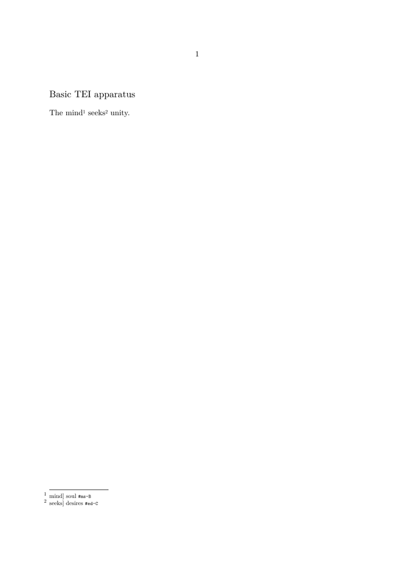

🚧 Under construction — This page and its subpages are currently being revised. Contributions are welcome: feel free to edit and improve them.
Guide 3 of 6 — Encoding a basic critical apparatus in TEI
Previous: Guide 2 — Declaring witnesses in TEI critical editions · Collection overview · Glossary · Next: Guide 4 — Encoding complex textual variation in TEI
What you will build in this guide
Guide 2 ended with a stable witness registry:
sourceDesc
└── listWit
├── witness A [xml:id="ms-A"]
├── witness B [xml:id="ms-B"]
└── witness C [xml:id="ed-C"]
Guide 3 keeps those declarations and adds two simple apparatus entries inside the text:
<p xml:id="p1">The
<app>
<lem wit="#ms-A #ed-C">mind</lem>
<rdg wit="#ms-B">soul</rdg>
</app>
<app>
<lem wit="#ms-A #ms-B">seeks</lem>
<rdg wit="#ed-C">desires</rdg>
</app>
unity.
</p>
The working XML will use TEI's parallel segmentation method. ConTeXt will then inspect the apparatus by selecting lemmas, readings, and raw witness references.
The final typography of a continuous critical apparatus belongs to Guide 6.
Contents
-
1
Encoding a basic critical apparatus in TEI
- 1.1 1. Where this guide fits in the collection
- 1.2 Part I — From witnesses to apparatus entries
- 1.3 2. Identify one place of textual variation
- 1.4 3. Add <app>, <lem>, and <rdg>
- 1.5 4. Connect readings to witnesses with @wit
- 1.6 Part II — Build the apparatus in the text
- 1.7 5. Declare the variant-encoding method
- 1.8 6. Insert the first apparatus entry into the paragraph
- 1.9 7. Add a second apparatus entry
- 1.10 8. Derive edited and witness-oriented views
- 1.11 Part III — Keep evidence separate from presentation
- 1.12 9. Several readings and shared witness support
- 1.13 10. Encoded evidence is not printed notation
- 1.14 11. What should not be encoded as reading content
- 1.15 Part IV — Complete, check, and inspect
- 1.16 12. Complete Guide 3 TEI document
- 1.17 13. Check the apparatus
- 1.18 14. Inspect the apparatus with ConTeXt
- 1.19 15. What you have built
- 1.20 16. Continue with Guide 4
- 1.21 Related pages
Guide 1 created the TEI document.
Guide 2 added a registry of textual witnesses.
Guide 3 now connects those witnesses to the places where their texts agree or differ.
Suppose the three witnesses preserve:
A The mind seeks unity. B The soul seeks unity. C The mind desires unity.
Two places vary:
mind / soul seeks / desires
The basic movement of this guide is:
declared witnesses
│
▼
textual evidence
│
▼
editorial relation
│
▼
app / lem / rdg
│
▼
@wit references
│
▼
reusable critical-apparatus data
How to read this diagram. The apparatus is built from editorial relations, not from a preformatted note string. The same witness identities created in Guide 2 are reused here to connect textual forms with their documentary support.
Guiding principle. TEI records the relationship between textual forms and the witnesses that support them. It does not need to store the punctuation, abbreviations, or visual compression of one particular printed apparatus.
1. Where this guide fits in the collection
The six guides construct one progressively richer scholarly source:
GUIDE 1
basic TEI document
│
▼
GUIDE 2
witness registry
A / B / C
│
▼
GUIDE 3 ← YOU ARE HERE
basic apparatus relations
app
├── lem
│ └── @wit
└── rdg
└── @wit
│
▼
GUIDE 4
complex textual variation
│
▼
GUIDE 5
processing and validation
│
▼
GUIDE 6
scholarly page composition
How to read this diagram. Guide 3 does not create a separate apparatus database. It enriches the same TEI document by connecting textual forms in the body to witness identities declared in the header. Guide 4 will keep this architecture while adding more complex kinds of variation.
The state inherited from Guide 2 is:
TEI
├── teiHeader
│ └── fileDesc
│ └── sourceDesc
│ └── listWit
│ ├── witness A [xml:id="ms-A"]
│ ├── witness B [xml:id="ms-B"]
│ └── witness C [xml:id="ed-C"]
│
└── text
└── body
└── p [xml:id="p1"]
The witness registry answers:
Which textual sources exist?
Guide 3 adds the answer to:
What does each witness read at a particular place in the text?
Stage reached. The documentary side of the edition is ready. A, B, and C have stable identities; Guide 3 can now enrich the textual branch with explicit relations between readings and witnesses.
Part I — From witnesses to apparatus entries
2. Identify one place of textual variation
Begin with the first difference:
A mind B soul C mind
Before writing XML, express the editorial relation:
apparatus location
├── mind
│ ├── A
│ └── C
└── soul
└── B
How to read this diagram. One textual location has two distinct
forms. Witnesses A and C support mind; witness B supports
soul. The TEI structure should make this relation explicit.
A useful method throughout the guide is therefore:
TEXTUAL EVIDENCE
│
▼
EDITORIAL ANALYSIS
│
▼
TEI STRUCTURE
Reading method. Before writing TEI, identify the textual alternatives and the witnesses supporting each form. The XML should represent that editorial analysis.
3. Add
<app>
,
<lem>
, and
<rdg>
3.1. Add the apparatus location
The first new TEI structure is:
<app>
Conceptually, the textual branch grows from:
p └── text
to:
p └── app ← NEW
An <app> element groups the competing textual forms
associated with one apparatus location.
From inventory to relation. The witness list tells us which sources exist. An apparatus entry tells us how those sources relate at a particular place in the text.
3.2. Add the lemma and the alternative reading
For the simple model used here:
mind ├── A └── C soul └── B
we represent the adopted textual form with <lem> and the
alternative with <rdg>:
<app> <lem>mind</lem> <rdg>soul</rdg> </app>
Its local tree is:
app
├── lem
│ └── mind
└── rdg
└── soul
How to read this diagram. The <app> groups the
forms that compete at one location. In this tutorial,
<lem> is the form selected for the edited text, while
<rdg> records an alternative reading.
A single apparatus entry may contain several alternative readings:
<app> <lem>mind</lem> <rdg>soul</rdg> <rdg>understanding</rdg> </app>
Tutorial convention. This guide consistently uses one
<lem> because that makes the relationship between the
edited text and the apparatus easy to see. TEI does not require every
apparatus entry to contain a lemma.
Also, an apparatus lemma is not a lexical lemma. In this guide it is the textual form or span used as the base of an apparatus entry.
Further reference.
For apparatus, apparatus lemma, reading, and witness, see the Glossary.
For the TEI elements themselves, consult the TEI P5 chapter
Critical Apparatus
and the reference pages for
<app>,
<lem>,
and
<rdg>.
Stage reached. We can now represent competing textual forms at one location. We have not yet connected those forms to the witnesses that support them.
4. Connect readings to witnesses with
@wit
This is the decisive step.
Guide 2 created:
ms-A ms-B ed-C
Guide 3 now reuses those identities.
For the first variation:
mind ├── A └── C soul └── B
the TEI entry becomes:
<app> <lem wit="#ms-A #ed-C">mind</lem> <rdg wit="#ms-B">soul</rdg> </app>
The cumulative tree is now:
TEI
├── teiHeader
│ └── fileDesc
│ └── sourceDesc
│ └── listWit
│ ├── witness A [xml:id="ms-A"]
│ ├── witness B [xml:id="ms-B"]
│ └── witness C [xml:id="ed-C"]
│
└── text
└── body
└── p
└── app
├── lem
│ ├── text: mind
│ └── wit: #ms-A #ed-C
└── rdg
├── text: soul
└── wit: #ms-B
4.1. The two branches are now connected
The relation introduced here is not merely hierarchical:
TEI HEADER TEXT
witness A
xml:id="ms-A" ◄──────────────────────┐
│
witness B │
xml:id="ms-B" ◄──────────────┐ │
│ │
witness C │ │
xml:id="ed-C" ◄──────────┐ │ │
│ │ │
│ │ │
app│ │ │
├──lem: mind │
│ └── wit="#ms-A #ed-C"
│
└──rdg: soul
└── wit="#ms-B"
How to read this diagram. XML nesting groups the competing forms
into one apparatus entry. The @wit references cross the tree
to connect those forms with documentary objects declared in the header.
The TEI document is therefore simultaneously:
- a hierarchical XML tree;
- a network of references between identified objects.
Guiding principle. Nesting groups the lemma and readings into one apparatus entry. References connect those textual forms to witnesses declared elsewhere in the document.
4.2. One witness and several witnesses
One witness:
wit="#ms-B"
Several witnesses:
wit="#ms-A #ed-C"
The second form represents two references:
wit="#ms-A #ed-C"
│ │
▼ ▼
#ms-A #ed-C
│ │
▼ ▼
witness A witness C
Use spaces, not commas:
wit="#ms-A #ed-C"
Do not write:
wit="#ms-A, #ed-C"
and do not repeat the same XML attribute:
wit="#ms-A" wit="#ed-C"
Reference syntax matters. The declaration contains
xml:id="ms-A". A local reference contains
#ms-A. The number sign belongs to the reference, not to the
identifier itself.
Further reference.
For the formal TEI definition of @wit, see the P5
att.witnessed
attribute class.
Its value may contain one or more space-separated pointers to witness identifiers.
Stage reached. The first apparatus entry now records both the textual alternatives and the witnesses supporting each form.
Part II — Build the apparatus in the text
5. Declare the variant-encoding method
Before inserting apparatus entries into the running text, declare the method used by this tutorial.
TEI supports several ways of connecting apparatus entries to textual locations. This guide uses parallel segmentation: the competing forms are encoded directly at the place where the variation occurs.
Add the following to the TEI header, after
<fileDesc>:
<encodingDesc>
<variantEncoding
method="parallel-segmentation"
location="internal"/>
</encodingDesc>
The relevant part of the header is therefore:
<teiHeader>
<fileDesc>
...
</fileDesc>
<encodingDesc>
<variantEncoding
method="parallel-segmentation"
location="internal"/>
</encodingDesc>
</teiHeader>
Technical note. Parallel segmentation means that each location
of variation is represented inside the running text by an
<app> containing the competing forms. In this tutorial
the apparatus is therefore location="internal".
Further reference.
TEI P5 distinguishes three principal methods for linking apparatus entries to the text: location-referenced, double-end-point attachment, and parallel segmentation.
This tutorial uses only parallel segmentation. See the
TEI P5 chapter Critical Apparatus
and the reference page for
<variantEncoding>
for the alternatives.
6. Insert the first apparatus entry into the paragraph
The paragraph inherited from Guide 2 was:
<p xml:id="p1">The mind seeks unity.</p>
Replace the variable word mind with the first inline
apparatus entry:
<p xml:id="p1">The <app><lem wit="#ms-A #ed-C">mind</lem><rdg wit="#ms-B">soul</rdg></app> seeks unity.</p>
The cumulative tree becomes:
TEI
├── teiHeader
│ ├── fileDesc
│ │ └── sourceDesc
│ │ └── listWit
│ │ ├── A
│ │ ├── B
│ │ └── C
│ └── encodingDesc
│ └── variantEncoding
│
└── text
└── body
└── p
├── text: "The "
├── app
│ ├── lem: mind
│ │ └── witnesses: A C
│ └── rdg: soul
│ └── witness: B
└── text: " seeks unity."
How to read this diagram. Guide 2 enriched the documentary branch with witness declarations. Guide 3 now enriches the textual branch with an apparatus entry while the header also states which variant-encoding method the document uses.
6.1. One encoded location, several possible texts
Selecting the lemma gives:
The mind seeks unity.
Selecting the reading supported by B gives:
The soul seeks unity.
The same encoded location therefore contains more than one possible textual realisation.
One encoded location, several possible texts. The lemma can generate the edited text. A witness-oriented process can instead select a reading supported by a particular witness.
6.2. Mixed-content whitespace
For structural explanation, it is convenient to display:
<p xml:id="p1">
The
<app>
<lem wit="#ms-A #ed-C">mind</lem>
<rdg wit="#ms-B">soul</rdg>
</app>
seeks unity.
</p>
But mixed XML content requires care because indentation and line breaks can become textual whitespace.
For the working MWE, the textual sequence is therefore kept compact where necessary.
Technical note. Pretty-printing mixed XML content can introduce whitespace text nodes. Indented examples are useful for understanding the tree; compact source is used where necessary to keep the MWE's textual spacing predictable.
7. Add a second apparatus entry
The witnesses also differ at the second variable word:
A seeks B seeks C desires
The editorial relation is:
seeks ├── A └── B desires └── C
The TEI structure is:
<app> <lem wit="#ms-A #ms-B">seeks</lem> <rdg wit="#ed-C">desires</rdg> </app>
The paragraph now becomes:
<p xml:id="p1">The <app><lem wit="#ms-A #ed-C">mind</lem><rdg wit="#ms-B">soul</rdg></app> <app><lem wit="#ms-A #ms-B">seeks</lem><rdg wit="#ed-C">desires</rdg></app> unity.</p>
Its local tree is:
p ├── text: "The " │ ├── app 1 │ ├── lem: mind │ │ └── witnesses: A C │ └── rdg: soul │ └── witness: B │ ├── text: " " │ ├── app 2 ← NEW │ ├── lem: seeks │ │ └── witnesses: A B │ └── rdg: desires │ └── witness: C │ └── text: " unity."
How to read this diagram. The paragraph now contains two independent
locations of variation. Each <app> groups its own
textual alternatives and witness support.
Stage reached. The paragraph contains two apparatus entries. Each records an adopted form, an alternative form, and the witnesses supporting each.
8. Derive edited and witness-oriented views
The two apparatus entries record:
ENTRY 1 mind ├── A └── C soul └── B ENTRY 2 seeks ├── A └── B desires └── C
The repeated A/B/C evidence is intentional here: it lets us verify what the two apparatus entries imply when they are read together.
8.1. Edited text
Selecting both lemmas gives:
The mind seeks unity.
8.2. Witness-oriented view for A
Select the forms supported by A:
entry 1 → mind entry 2 → seeks
Result:
The mind seeks unity.
8.3. Witness-oriented view for B
Select the forms supported by B:
entry 1 → soul entry 2 → seeks
Result:
The soul seeks unity.
8.4. Witness-oriented view for C
Select the forms supported by C:
entry 1 → mind entry 2 → desires
Result:
The mind desires unity.
The relation can be visualised as:
TEI APPARATUS DATA
│
+-------------+-------------+
│ │ │
▼ ▼ ▼
select A select B select C
│ │ │
▼ ▼ ▼
mind soul mind
seeks seeks desires
│ │ │
▼ ▼ ▼
The mind seeks The soul seeks The mind desires
unity. unity. unity.
How to read this diagram. Because each reading remains associated with witness identities, processing can derive a view based on the readings encoded for a selected witness.
Why structured references matter. The TEI apparatus is not merely a printable note. Because readings remain associated with identifiable witnesses, the same data can also support witness-oriented views and other forms of analysis.
Technical note. A witness-oriented text derived from apparatus data should not automatically be treated as a complete diplomatic transcription of that witness. It represents the encoded variation available in the apparatus model; other witness-specific features may not have been recorded there.
Part III — Keep evidence separate from presentation
9.1. Several alternative readings
Suppose:
A mind B soul C understanding
The TEI entry may contain several readings:
<app> <lem wit="#ms-A">mind</lem> <rdg wit="#ms-B">soul</rdg> <rdg wit="#ed-C">understanding</rdg> </app>
Tree:
app
├── lem
│ ├── mind
│ └── A
├── rdg
│ ├── soul
│ └── B
└── rdg
├── understanding
└── C
9.2. Several witnesses supporting the same reading
Suppose:
A mind B soul C mind D soul
The relation is:
mind ├── A └── C soul ├── B └── D
Encode each distinct reading once:
<app> <lem wit="#ms-A #ed-C">mind</lem> <rdg wit="#ms-B #ms-D">soul</rdg> </app>
For ordinary shared support, avoid duplicating identical readings merely because several witnesses transmit them:
<rdg wit="#ms-B">soul</rdg> <rdg wit="#ms-D">soul</rdg>
unless the project's editorial model has a specific reason to preserve those readings as distinct records.
Guiding principle. Encode the textual distinction once and record shared witness support as structured references. Do not duplicate an identical reading only to reproduce a particular printed convention.
10. Encoded evidence is not printed notation
This distinction is fundamental.
TEI may store:
<app> <lem wit="#ms-A #ed-C">mind</lem> <rdg wit="#ms-B">soul</rdg> </app>
The same data can be rendered in several ways.
10.1. Negative apparatus
mind] soul B
10.2. Positive apparatus
mind A C] soul B
10.3. Prose report
Witness B reads “soul”, while A and C read “mind”.
10.4. Reading edition
The visible apparatus may be omitted:
The mind seeks unity.
The relation is:
TEI SOURCE
app
├── mind : A C
└── soul : B
│
│ same evidence
▼
+-------------+-------------+-------------+
│ │ │ │
▼ ▼ ▼ ▼
negative positive prose reading
apparatus apparatus report edition
mind] soul B mind A C] B reads The mind
soul B "soul"... seeks unity.
How to read this diagram. The encoded scholarly relation remains stable. Output conventions select, compress, punctuate, or suppress parts of that relation according to the needs of a particular edition.
| TEI source | Printed output |
|---|---|
| Records structured elements and attributes | Uses typography and punctuation |
| Can identify all encoded witness support | May suppress support that can be inferred |
| Preserves readings as distinct records | May compress them into a compact apparatus entry |
| Remains reusable | Is designed for one output convention |
One source, several outputs. TEI records the textual relation. ConTeXt can later decide what to suppress, expand, abbreviate, punctuate, or display.
10.5. Positive encoded information and negative display
The TEI source explicitly records:
mind → A C soul → B
A negative apparatus may print only:
mind] soul B
The omission of A and C is a property of the output convention. It need not require the source to discard explicit support already known to the edition.
Further reference.
For positive apparatus and negative apparatus, see the Glossary.
The distinction here concerns presentation. The TEI source may retain explicit witness relations even when a particular apparatus style suppresses some of them.
11. What should not be encoded as reading content
11.1. Do not put the printed siglum inside the reading
Avoid:
<rdg>soul B</rdg>
Use:
<rdg wit="#ms-B">soul</rdg>
The three layers remain distinct:
reading text soul witness reference #ms-B printed siglum B
11.2. Do not store the lemma separator
Avoid:
<lem wit="#ms-A #ed-C">mind]</lem>
Use:
<lem wit="#ms-A #ed-C">mind</lem>
The closing bracket belongs to a rendering convention.
11.3. Do not store a preformatted apparatus string
Avoid:
<app>mind] soul B</app>
This collapses:
- apparatus structure;
- lemma;
- reading;
- witness support;
- printed punctuation.
Use:
<app> <lem wit="#ms-A #ed-C">mind</lem> <rdg wit="#ms-B">soul</rdg> </app>
Do not encode one finished display as if it were the evidence.
mind] soul B is one possible printed representation. The TEI
source should preserve the separate scholarly objects from which that
representation can be generated.
Part IV — Complete, check, and inspect
12. Complete Guide 3 TEI document
Save the source as:
tei-guide-03.xml
Use:
<?xml version="1.0" encoding="UTF-8"?>
<TEI xmlns="http://www.tei-c.org/ns/1.0">
<teiHeader>
<fileDesc>
<titleStmt>
<title>A basic TEI critical apparatus</title>
</titleStmt>
<publicationStmt>
<p>Unpublished teaching example.</p>
</publicationStmt>
<sourceDesc>
<listWit>
<witness xml:id="ms-A" n="A">
The principal manuscript.
</witness>
<witness xml:id="ms-B" n="B">
A later manuscript containing several alternative readings.
</witness>
<witness xml:id="ed-C" n="C">
An early printed edition.
</witness>
</listWit>
</sourceDesc>
</fileDesc>
<encodingDesc>
<variantEncoding
method="parallel-segmentation"
location="internal"/>
</encodingDesc>
</teiHeader>
<text>
<body>
<p xml:id="p1">The <app><lem wit="#ms-A #ed-C">mind</lem><rdg
wit="#ms-B">soul</rdg></app> <app><lem
wit="#ms-A #ms-B">seeks</lem><rdg
wit="#ed-C">desires</rdg></app> unity.</p>
</body>
</text>
</TEI>
12.1. Read the complete source as a tree
TEI
├── teiHeader
│ ├── fileDesc
│ │ ├── titleStmt
│ │ │ └── title
│ │ ├── publicationStmt
│ │ │ └── p
│ │ └── sourceDesc
│ │ └── listWit
│ │ ├── witness A
│ │ │ └── xml:id="ms-A"
│ │ ├── witness B
│ │ │ └── xml:id="ms-B"
│ │ └── witness C
│ │ └── xml:id="ed-C"
│ │
│ └── encodingDesc
│ └── variantEncoding
│ ├── method="parallel-segmentation"
│ └── location="internal"
│
└── text
└── body
└── p [xml:id="p1"]
├── text: "The "
│
├── app 1
│ ├── lem
│ │ ├── text: mind
│ │ └── wit: #ms-A #ed-C
│ └── rdg
│ ├── text: soul
│ └── wit: #ms-B
│
├── text: " "
│
├── app 2
│ ├── lem
│ │ ├── text: seeks
│ │ └── wit: #ms-A #ms-B
│ └── rdg
│ ├── text: desires
│ └── wit: #ed-C
│
└── text: " unity."
How to read this diagram. The structure accumulated across Guides
1–3 now has three complementary parts: documentary witness declarations,
a declaration of the variant-encoding method, and apparatus relations
inside the text. The @wit pointers connect the textual and
documentary branches.
Stage reached. The TEI source now contains both sides of the basic critical-edition model: documentary identities in the header and textual variation in the body. References connect the two.
13. Check the apparatus
Guides 1 and 2 introduced the distinction:
XML well-formedness
│
▼
TEI validation
│
▼
editorial correctness
This reminder is intentional. Guide 3 applies the same three levels to a new kind of structure.
How to read this diagram. Syntactic correctness, TEI conformance, and scholarly correctness answer different questions. A file can pass the first two levels while still assigning the wrong reading to a witness.
For this guide, concentrate on apparatus-specific checks.
13.1. Basic checklist
| Check | Expected result |
|---|---|
| Variant method | <variantEncoding method="parallel-segmentation" location="internal"/>
|
| Apparatus grouping | Competing forms at one location belong to one <app>
|
| Tutorial lemma convention | One <lem> in each simple entry
|
| Alternative reading | At least one <rdg> in the tutorial examples
|
| Witness support | Every @wit target corresponds to a declared witness
|
| Multiple references | Space-separated |
| Reading text | Contains no printed witness sigla |
| Apparatus punctuation | Not embedded in lemma or reading content |
| Editorial attribution | Encoded witness support matches the actual evidence |
13.2. Undeclared witness
Incorrect:
<rdg wit="#ms-D">soul</rdg>
if the header contains no witness with:
xml:id="ms-D"
13.3. Number sign in the wrong place
Incorrect declaration:
xml:id="#ms-A"
Correct declaration:
xml:id="ms-A"
Correct local reference:
wit="#ms-A"
13.4. Reading outside its apparatus entry
Incorrect:
<app> <lem wit="#ms-A #ed-C">mind</lem> </app> <rdg wit="#ms-B">soul</rdg>
Correct for the simple parallel-segmentation model used here:
<app> <lem wit="#ms-A #ed-C">mind</lem> <rdg wit="#ms-B">soul</rdg> </app>
13.5. Structurally correct can still be editorially wrong
This may be valid XML and structurally acceptable TEI:
<rdg wit="#ms-B">soul</rdg>
but it remains wrong if witness B actually reads:
mind
Validation has limits. Technical validation can establish structural consistency. It cannot determine whether the editor has correctly transcribed or assigned a reading to a witness.
Further reference.
For the general distinction between XML well-formedness, TEI validation, and editorial correctness, return to Guide 1.
For the TEI apparatus model and the constraints associated with the chosen method, consult the P5 Critical Apparatus chapter.
Stage reached. The basic apparatus now has explicit structural and editorial checks, including a declaration of the parallel-segmentation method used by the tutorial.
14. Inspect the apparatus with ConTeXt
The final construction of a continuous critical apparatus belongs to Guide 6.
Here the goal is smaller:
Can ConTeXt
load the TEI source
↓
find each app
↓
select its lemma
↓
print that lemma in the edited text
↓
place alternative readings in notes
↓
show the raw witness references?
14.1. Processing map before the code
paragraph
│
+---------+---------+
│ │
▼ ▼
app 1 app 2
│ │
+---+---+ +---+---+
│ │ │ │
▼ ▼ ▼ ▼
lem rdg lem rdg
mind soul seeks desires
│ │ │ │
▼ ▼ ▼ ▼
main text note main text note
How to read this diagram. ConTeXt follows the XML structure rather
than parsing a preformatted apparatus string. Each
<app> supplies the lemma used in the running text and
the readings used by this inspection test in notes.
The processing model is:
TEI XML │ ▼ ConTeXt XML setups │ ├── lem ──────► edited text │ ├── rdg ──────► note │ └── @wit ─────► raw witness reference
14.2. Local two-file test
Keep:
tei-guide-03.xml tei-guide-03.tex
in the same directory.
Save the following as tei-guide-03.tex:
\xmlregisterns
{tei}
{http://www.tei-c.org/ns/1.0}
\startxmlsetups xml:tei:document
\xmlsetsetup
{#1}
{tei:TEI|tei:text|tei:body}
{xml:tei:flush}
\xmlsetsetup
{#1}
{tei:teiHeader}
{xml:tei:ignore}
\xmlsetsetup
{#1}
{tei:p}
{xml:tei:paragraph}
\xmlsetsetup
{#1}
{tei:app}
{xml:tei:apparatus}
\xmlsetsetup
{#1}
{tei:lem}
{xml:tei:lemma}
\xmlsetsetup
{#1}
{tei:rdg}
{xml:tei:reading}
\stopxmlsetups
\xmlregistersetup{xml:tei:document}
\startxmlsetups xml:tei:flush
\xmlflush{#1}
\stopxmlsetups
\startxmlsetups xml:tei:ignore
% The TEI header is not typeset in this inspection test.
\stopxmlsetups
\startxmlsetups xml:tei:paragraph
\par
\xmlflush{#1}
\par
\stopxmlsetups
\startxmlsetups xml:tei:lemma
\xmlflush{#1}
\stopxmlsetups
\startxmlsetups xml:tei:reading
\xmlflush{#1}
\space
\ttx{\xmlatt{#1}{wit}}
\stopxmlsetups
\startxmlsetups xml:tei:apparatus
\xmlfirst{#1}{tei:lem}
\footnote
{\xmlfirst{#1}{tei:lem}]
\space
\xmlall{#1}{tei:rdg}}
\stopxmlsetups
\starttext
\subject{Basic TEI apparatus}
\xmlprocessfile
{tei}
{tei-guide-03.xml}
{}
\stoptext
Compile with:
context tei-guide-03.tex
The intended edited text is:
Basic TEI apparatus The mind¹ seeks² unity.
The notes contain:
1. mind] soul #ms-B 2. seeks] desires #ed-C

14.3. Follow the processing path
tei-guide-03.xml
│
▼
ConTeXt loads the TEI tree
│
▼
teiHeader is ignored for this output
│
▼
paragraph is processed
│
▼
each app is encountered
│
▼
lemma is selected
│
├──────────────► edited text
│
▼
rdg elements are selected
│
├──────────────► footnote
│
▼
raw @wit value is retrieved
│
▼
#ms-B / #ed-C
How to read this diagram. The inspection intentionally stops before full witness resolution. It demonstrates that the apparatus structure can already be traversed and routed to different ConTeXt functions.
Technical note. This inspection test deliberately displays raw
identifiers such as #ms-B. Resolving those references to
reader-facing sigla such as B belongs to the later processing
stage.
14.4. Deliberate limitations
This test does not yet:
- resolve witness identifiers to reader-facing sigla;
- sort witness support;
- generate a continuous apparatus paragraph;
- switch automatically between positive and negative apparatus styles;
- manage complex location labels;
- apply final siglum typography;
- handle omissions, transpositions, conjectures, or other complex variants.
Its purpose is only to verify:
TEI apparatus
│
▼
lemma in text
│
▼
reading in note
│
▼
raw witness reference
14.5. Garden source-and-result demonstration
The local two-file test keeps TEI data and ConTeXt processing in separate files. For Garden, the same basic structure can be embedded in a buffer so that source and result are shown together:
-
\startbuffer[apparatus]
="http://www.tei-c.org/ns/1.0"> \stopbuffer \xmlregisterns {tei} {http://www.tei-c.org/ns/1.0} \startxmlsetups xml:tei:document \xmlsetsetup{#1}{tei:TEI|tei:text|tei:body}{xml:tei:flush} \xmlsetsetup{#1}{tei:teiHeader}{xml:tei:ignore} \xmlsetsetup{#1}{tei:p}{xml:tei:paragraph} \xmlsetsetup{#1}{tei:app}{xml:tei:apparatus} \xmlsetsetup{#1}{tei:lem}{xml:tei:lemma} \xmlsetsetup{#1}{tei:rdg}{xml:tei:reading} \stopxmlsetups \xmlregistersetup{xml:tei:document} \startxmlsetups xml:tei:flush \xmlflush{#1} \stopxmlsetups \startxmlsetups xml:tei:ignore \stopxmlsetups \startxmlsetups xml:tei:paragraph \par \xmlflush{#1} \par \stopxmlsetups \startxmlsetups xml:tei:lemma \xmlflush{#1} \stopxmlsetups \startxmlsetups xml:tei:reading \xmlflush{#1} \space \ttx{\xmlatt{#1}{wit}} \stopxmlsetups \startxmlsetups xml:tei:apparatus \xmlfirst{#1}{tei:lem} \footnote {\xmlfirst{#1}{tei:lem}] \space \xmlall{#1}{tei:rdg}} \stopxmlsetups \starttext \subject{Basic TEI apparatus} \xmlprocessbuffer{tei}{apparatus}{} \stoptextA basic TEI critical apparatus Unpublished teaching example.
="ms-A" n="A">The principal manuscript. ="ms-B" n="B">A later manuscript. ="ed-C" n="C">An early printed edition. ="parallel-segmentation" location="internal"/> ="p1">The
="#ms-A #ed-C">mind ="#ms-B">soul ="#ms-A #ms-B">seeks ="#ed-C">desires -

Technical note. The local and Garden examples demonstrate the same
architecture. The local version processes an external XML file with
\xmlprocessfile; the Garden version uses
\xmlprocessbuffer only so that source and result can appear on
one wiki page.
Further reference.
For ConTeXt XML setups, selectors, attribute access, and flushing, see XML setup commands.
For the broader TEI → ConTeXt workflow, see TEI XML.
Guide 3 uses only the commands needed to traverse the basic apparatus structure. Systematic reference resolution and record processing belong to Guide 5.
Guiding principle. The TEI source describes the scholarly structure. The processing layer decides how that structure becomes a particular edition.
Stage reached. ConTeXt can now reach the basic apparatus structure, use lemmas in the running text, place readings in notes, and expose the raw witness references for inspection.
15. What you have built
The cumulative progression of Guide 3 is:
STEP 1
start from the witness registry
│
▼
STEP 2
identify one variable location
│
▼
STEP 3
add app / lem / rdg
│
▼
STEP 4
connect readings with @wit
│
▼
STEP 5
declare parallel segmentation
│
▼
STEP 6
insert the apparatus inline
│
▼
STEP 7
add a second apparatus entry
│
▼
STEP 8
derive edited and witness-oriented views
│
▼
STEP 9
inspect the structure with ConTeXt
How to read this diagram. Guide 3 moves from documentary identities to structured textual relations. Every later operation depends on preserving the distinction between textual evidence, witness identity, and typographical output.
The conceptual result is:
WITNESSES
+
TEXTUAL LOCATIONS
+
READINGS
+
REFERENCES
+
VARIANT-ENCODING METHOD
│
▼
STRUCTURED BASIC CRITICAL APPARATUS
15.1. Final checklist
Before moving to Guide 4, verify:
| Check | Expected result |
|---|---|
| Witness registry | A, B, and C remain declared |
| Variant encoding | Parallel segmentation, internal apparatus |
| Paragraph | Contains two inline apparatus entries |
| First lemma | mind
|
| First reading | soul
|
| First lemma support | A C |
| First reading support | B |
| Second lemma | seeks
|
| Second reading | desires
|
| Second lemma support | A B |
| Second reading support | C |
| References | All targets correspond to declared witnesses |
| Reading content | Contains no display sigla or apparatus punctuation |
| Edited text | Produces “The mind seeks unity.” |
| Witness-oriented views | A, B, and C can be distinguished from the encoded support |
| ConTeXt inspection | Lemmas, readings, and raw @wit values can be reached
|
Guide 3 complete. The TEI source can now represent straightforward textual substitutions. Each apparatus entry identifies a variable location, distinguishes the tutorial's lemma from alternative readings, and connects those forms to declared witnesses.
16. Continue with Guide 4
The same TEI document has grown progressively.
Guide 1 — build the container
TEI
├── teiHeader
└── text
└── body
└── p
Guide 2 — add witnesses
TEI
├── teiHeader
│ └── sourceDesc
│ └── listWit
│ ├── A
│ ├── B
│ └── C
│
└── text
└── body
└── p
Guide 3 — add basic textual variation
TEI
├── teiHeader
│ ├── sourceDesc
│ │ └── listWit
│ │ ├── A
│ │ ├── B
│ │ └── C
│ └── encodingDesc
│ └── variantEncoding
│
└── text
└── body
└── p
├── app
│ ├── lem
│ └── rdg
│
└── app
├── lem
└── rdg
Guide 4 — next expansion
Guide 4 keeps the same basic architecture but adds more complex textual relations:
basic apparatus entries
│
▼
complex textual variation
├── omissions
├── additions
├── corrections
├── conjectures
├── uncertainty
├── grouped readings
├── transpositions
└── unequal textual spans
How to read these diagrams. The repetition is mnemonic and comparative. Guide 1 supplies the container; Guide 2 gives textual sources stable identities; Guide 3 connects readings with those identities; Guide 4 keeps that model but extends the kinds of textual relation it can represent.
The six-guide route is now:
STRUCTURE │ ▼ IDENTITIES │ ▼ BASIC RELATIONS ← GUIDE 3 COMPLETE │ ▼ COMPLEX RELATIONS ← NEXT │ ▼ PROCESSING │ ▼ TYPOGRAPHY
- Next: Guide 4 — Encoding complex textual variation in TEI
Guide 3 of 6 — Encoding a basic critical apparatus in TEI
Previous: Guide 2 — Declaring witnesses in TEI critical editions · Collection overview · Glossary · Next: Guide 4 — Encoding complex textual variation in TEI
Related pages
- Building critical editions from TEI XML
- Understanding TEI documents for critical editions
- Declaring witnesses in TEI critical editions
- Encoding complex textual variation in TEI
- Glossary of terms used in the TEI XML critical edition guides
- Building a simple critical apparatus
- TEI XML
- XML
- XML setup commands
- ConTeXt and Lua programming
- Processing XML with Lua
- Typesetting a TEI critical apparatus with ConTeXt